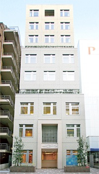

大阪市立総合医療センター 入院案内
カテーテル検査，アブレーション治療で御入院の際の注意点
本院は基準看護です．通常は家族の付添は必要ありません．ご希望の場合，母親の付添は可能ですが，病棟で他の児の付き添いをされている母親がおられるため父親の付添は原則できませんので御了承下さい．
個室に空きがある場合は個室での父親の付添は可能です(1日約7000円から9000円の個室代が必要です)が，白血病の治療等，治療に個室が必要な方に優先して使用しているため，小児病棟で使用できる個室は非常に限られています．入院時に個室が空いている場合は使用できることもありますが，事前の予約はできませんので，あわせて御了承下さい．
風邪症状のあるお子さんは，鼻汁，軽い咳で発熱はない場合でも，入院できないことがあります．
特殊なウイルスによる感冒の場合，健康な児では大きな問題にならなくても，病棟に入院されている免疫抑制のあるお子さん(白血病など)では致命的になることがあるためです．
鼻汁，軽い咳がある場合は，病棟入室前に鼻汁の検査をさせていただきます．
問題になるウイルスが検出されなければ入院していただきますが，検査が陽性に出た場合は，入院不可能となり，カテーテル検査やアブレーション治療も延期となりますので，御了解下さいますようよろしくお願いします．
入院期間は，通常は5日間です．特殊なケースで6日間になることもあります．
 入院のしおり (pdf) ダウンロード
入院のしおり (pdf) ダウンロード  ペアレンツハウス・近隣ホテルの案内 (pdf) ダウンロード
ペアレンツハウス・近隣ホテルの案内 (pdf) ダウンロード
 ペアレンツハウスのwebサイト
ペアレンツハウスのwebサイトペアレンツハウスとは，疾病治療のため遠方から来られる御家族，お子さんのための宿泊施設です．
大阪市立総合医療センターから地下鉄で約30分のところにあります．
一泊 1000円で宿泊できます．

「アブレーション説明」のページの元になっているpdfファイルです．
約130枚あります．
入院期間は，通常は5日間です．
外来でアブレーションの説明の際，スライドといっしょに使用している用紙です．
合わせて御参照下さい．
大阪市立総合医療センターのサイト